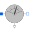

RelativeSensorBase class to measure a relative variable between two pins |

|
Information
This information is part of the Modelica Standard Library maintained by the Modelica Association.
The RelaticeSensor is a partial model for converting values that can be calculated from two pin connectors into a real valued signal. The special calculation has to be described in the model which inherits the RelativeSensor. It is often used in sensor devices. To be a true sensor the modeller has to take care that the sensor model does not influence the electrical behavior to be measured.
Connectors (3)
| p |
Type: PositivePin Description: Positive electrical pin |
|
|---|---|---|
| n |
Type: NegativePin Description: Negative electrical pin |
|
| y |
Type: RealOutput Description: Measured quantity as Real output signal |